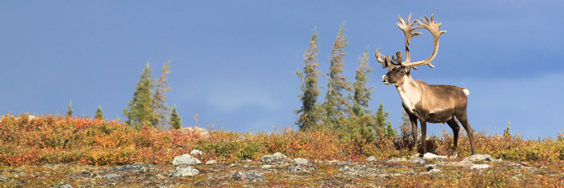

The word, "wilderness", derives from the notion of wildness; in other words that which is not controllable by humans. The word's etymology is from the Old English wildeornes, which in turn derives from wildeor meaning wild beast (wild + deor = beast, deer).[34] From this point of view, it is the wildness of a place that makes it a wilderness. The mere presence or activity of people does not disqualify an area from being "wilderness." Many ecosystems that are, or have been, inhabited or influenced by activities of people may still be considered "wild." This way of looking at wilderness includes areas within which natural processes operate without very noticeable human interference.
Wildlife includes all non-domesticated plants, animals and other organisms. Domesticating wild plant and animal species for human benefit has occurred many times all over the planet, and has a major impact on the environment, both positive and negative. Wildlife can be found in all ecosystems. Deserts, rain forests, plains, and other areas�including the most developed urban sites�all have distinct forms of wildlife. While the term in popular culture usually refers to animals that are untouched by civilized human factors, most scientists agree that wildlife around the world is (now) impacted by human activities
It is the common understanding of natural environment that underlies environmentalism � a broad political, social, and philosophical movement that advocates various actions and policies in the interest of protecting what nature remains in the natural environment, or restoring or expanding the role of nature in this environment. While true wilderness is increasingly rare, wild nature (e.g., unmanaged forests, uncultivated grasslands, wildlife, wildflowers) can be found in many locations previously inhabited by humans.
Goals for the benefit of people and natural systems, commonly expressed by environmental scientists and environmentalists include:
In some cultures the term environment is meaningless because there is no separation between people and what they view as the natural world, or their surroundings. Specifically in the United States, many native cultures do not recognize the "environment", or see themselves as environmentalists
Environmental issues are harmful effects of human activity on the biophysical environment. Environmental protection is a practice of protecting the natural environment on individual, organizational or governmental levels, for the benefit of both the environment and humans. Environmentalism, a social and environmental movement, addresses environmental issues through advocacy, education and activism.
The carbon dioxide equivalent of greenhouse gases (GHG) in the atmosphere has already exceeded 400 parts per million (NOAA) (with total "long-term" GHG exceeding 455 parts per million) (Intergovernmental Panel on Climate Change Report). This level is considered a tipping point. "The amount of greenhouse gas in the atmosphere is already above the threshold that can potentially cause dangerous climate change. We are already at risk of many areas of pollution...It's not next year or next decade, it's now." The UN Office for the Coordination of Humanitarian Affairs (OCHA) has stated "Climate change is not just a distant future threat. It is the main driver behind rising humanitarian needs and we are seeing its impact. The number of people affected and the damages inflicted by extreme weather has been unprecedented. Further, OCHA has stated: